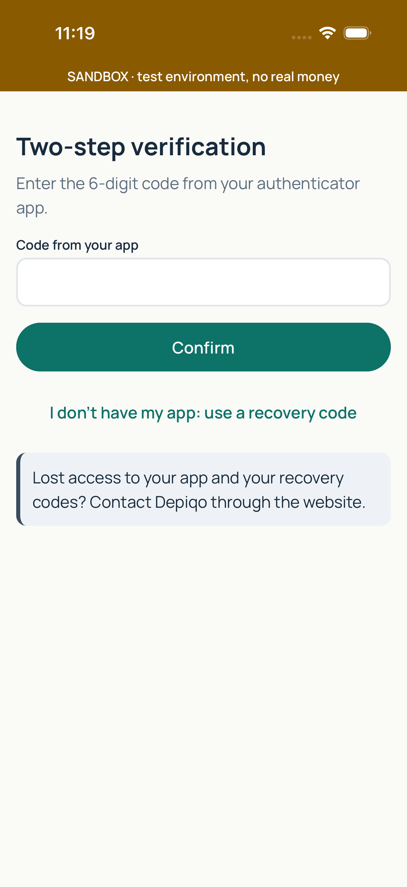
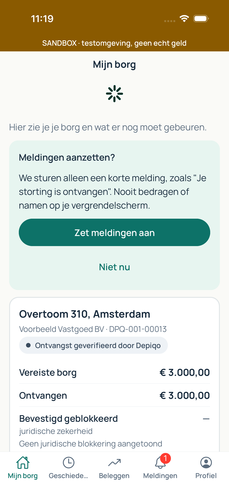
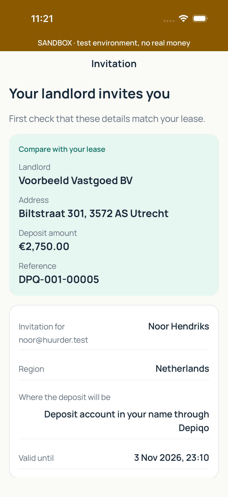

, borgen, vier bedragen, — bij onbekend).png)
| Flow | Resultaat | Tijd | Melding |
|---|---|---|---|
| a. Login (mila), borgen, vier bedragen, — bij onbekend | FAILED | 86.0 | Element not found: Id matching regex: tab-profile |
| b. Login met 2FA (lars) | ok | 59.0 | |
| reset-app | ok | 19.0 | |
| c. Uitnodiging via deep link: verhuurder, adres, bedrag | ok | 40.0 | |
| d. Eindafrekening bekijken (sanne), niet reageren | FAILED | 92.0 | Assertion is false: id: tab-profile is visible |
| e. Meldingen, profiel, taal fr en en | FAILED | 85.0 | Assertion is false: id: tab-profile is visible |
| f. Uitloggen, beschermde schermen niet bereikbaar | FAILED | 85.0 | Assertion is false: id: tab-profile is visible |
| g. Sessie blijft na herstart | FAILED | 88.0 | Assertion is false: id: tab-profile is visible |
| h. Beleggen verborgen (sofie) en zichtbaar in sandbox (daan) | FAILED | 84.0 | Assertion is false: id: tab-profile is visible |
| Fout wachtwoord geeft vertaalde foutmelding | FAILED | 83.0 | Assertion is false: id: tab-profile is visible |



, niet reageren).png)
.png)
.png)
.png)
 en zichtbaar in sandbox (daan)).png)
.png)